Somos uma instituição criada e gerenciada por alunos do IME-USP que proporciona
atividades extracurriculares ligadas ao esporte universitário, visando a integração
dos alunos do IME entre si e com alunos de outras unidades da USP e até mesmo de outras
universidades.
A Atlética é responsável pela organização de todas as modalidades esportivas do IME.
Além disso, realizamos festas, campeonatos em cidades do interior de São Paulo e eventos de integração.
Também confeccionamos camisetas, agasalhos, adesivos e outros artigos de nosso Instituto.
Para participar venha a uma das nossas reuniões semanais na sala da Atlética.
Também discutimos os assuntos relacionados à Atlética em uma lista de e-mails composta pela gestão e
seus colaboradores. Venha fazer parte da nossa equipe.
Beatriz
Presidenta
Marcela
Vice-Presidenta
Serra
Tesoureiro
A Associação Atlética Acadêmica da Matemática foi fundada em 27 de fevereiro de 1978 por Carlos Miguel Tobar,
aluno colombiano que ingressou no IME em 1975. Além dele, faziam parte da Atlética no momento de sua fundação:
Maria José Capelari, Maria Lucia Guedes de Siqueira, Maria da Graça Palumbo, Celi Audi, Haroldo Bevilacqua Filho,
George Gali e Osvaldo Makoto Yasuda.
A partir de 1996, a AAAMat começou a dar maior apoio às modalidades coletivas.
Nesse ano foram contratados técnicos para quase todas as modalidades, que começaram a ter treinos regulares. O resultado
desse investimento pode ser visto com os títulos dos Intercomps de 1997 e 1998, além da participação na Copa União de 1997,
que contou com a participação da Medicina e das cinco melhores atléticas da Copa União de 1996, competição disputada
por todas as atléticas da USP.